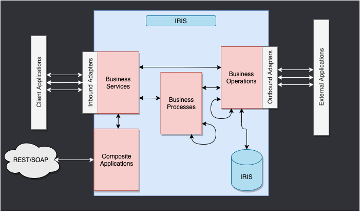

Component Interaction
This is the IRIS Framework.

The components inside of IRIS represent a production.
You have 3 main components: - BusinessService: This component aims to receive requests from external applications. - BusinessProcess: This component is responsible for processing the requests and orchestrating the business logic. - BusinessOperation: This component is responsible for executing the technical operations that are needed to fulfill the requests.
The composite applications will give us access to the production through external applications like REST services.
The arrows between them all of this components are messages.
The messages are the way that the components interact with each other.
How to exchange messages
To exchange messages between components, you can use the following methods:
send_request_sync: This method is used to send a request synchronously. It will wait for a response before continuing.send_request_async: This method is used to send a request asynchronously. It will not wait for a response before continuing.send_request_async_ng: Same assend_request_async, but with an ayncio implementation.send_multi_request_sync: This method is used to send multiple requests synchronously. It will wait for all responses before continuing.send_generator_request: This method is used to send a request synchronously and return a generator.
send_request_sync
This method is used to send a request synchronously. It will wait for a response before continuing.
Function signature
def send_request_sync(self, target: str, request: Union[Message, Any],
timeout: int = -1, description: Optional[str] = None) -> Any:
"""Send message synchronously to target component.
Args:
target: Name of target component
request: Message to send
timeout: Timeout in seconds, -1 means wait forever
description: Optional description for logging
Returns:
Response from target component
Raises:
TypeError: If request is invalid type
"""
...
Example usage
from iop import BusinessProcess
from msg import MyMessage
class MyBP(BusinessProcess):
def on_message(self, request):
msg = MyMessage(message="Hello World")
# Send a synchronous request to the target component
response = self.send_request_sync("Python.MyBO", msg)
self.log_info(f"Received response: {response}")
send_request_async
This method is used to send a request asynchronously. It will not wait for a response before continuing.
Function signature (for BusinessService and BusinessOperation)
def send_request_async(self, target: str, request: Union[Message, Any],
description: Optional[str] = None) -> None:
"""Send message asynchronously to target component.
Args:
target: Name of target component
request: Message to send
description: Optional description for logging
Raises:
TypeError: If request is invalid type
"""
...
Example usage (for BusinessService and BusinessOperation)
from iop import BusinessService
from msg import MyMessage
class MyBS(BusinessService):
def on_message(self, request):
msg = MyMessage(message="Hello World")
# Send an asynchronous request to the target component
self.send_request_async("Python.MyBO", msg)
self.log_info("Request sent asynchronously")
Function signature (for BusinessProcess)
def send_request_async(self, target: str, request: Any, description: Optional[str]=None, completion_key: Optional[str]=None, response_required: bool=True) -> None:
"""Send the specified message to the target business process or business operation asynchronously.
Args:
target: The name of the business process or operation to receive the request
request: The message to send to the target
description: An optional description property in the message header
completion_key: A token to identify the completion of the request
response_required: Whether a response is required
Raises:
TypeError: If request is not of type Message or IRISObject
"""
...
Example usage (for BusinessProcess)
from iop import BusinessProcess
from msg import MyMessage
class MyBP(BusinessProcess):
def on_message(self, request):
msg_one = MyMessage(message="Message1")
msg_two = MyMessage(message="Message2")
self.send_request_async("Python.MyBO", msg_one,completion_key="1")
self.send_request_async("Python.MyBO", msg_two,completion_key="2")
def on_response(self, request, response, call_request, call_response, completion_key):
if completion_key == "1":
self.response_one = call_response
elif completion_key == "2":
self.response_two = call_response
def on_complete(self, request, response):
self.log_info(f"Received response one: {self.response_one.message}")
self.log_info(f"Received response two: {self.response_two.message}")
send_request_async_ng
This method is used to send a request asynchronously using an asyncio implementation.
Function signature
async def send_request_async_ng(self, target: str, request: Union[Message, Any],
timeout: int = -1, description: Optional[str] = None) -> Any:
"""Send message asynchronously to target component with asyncio.
Args:
target: Name of target component
request: Message to send
timeout: Timeout in seconds, -1 means wait forever
description: Optional description for logging
Returns:
Response from target component
"""
...
Example usage
import asyncio
import random
from iop import BusinessProcess
from msg import MyMessage
class MyAsyncNGBP(BusinessProcess):
def on_message(self, request):
results = asyncio.run(self.await_response(request))
for result in results:
self.logger.info(f"Received response: {result.message}")
return MyMessage(message="All responses received")
async def await_response(self, request):
# create 1 to 10 messages
tasks = []
for i in range(random.randint(1, 10)):
tasks.append(self.send_request_async_ng("Python.MyAsyncNGBO",
MyMessage(message=f"Message {i}")))
return await asyncio.gather(*tasks)
send_multi_request_sync
This method is used to send multiple requests synchronously. It will wait for all responses before continuing.
Function signature
def send_multi_request_sync(self, target_request: List[Tuple[str, Union[Message, Any]]],
timeout: int = -1, description: Optional[str] = None) -> List[Tuple[str, Union[Message, Any], Any, int]]:
"""Send multiple messages synchronously to target components.
Args:
target_request: List of tuples (target, request) to send
timeout: Timeout in seconds, -1 means wait forever
description: Optional description for logging
Returns:
List of tuples (target, request, response, status)
Raises:
TypeError: If target_request is not a list of tuples
ValueError: If target_request is empty
"""
...
Example usage
from iop import BusinessProcess
from msg import MyMessage
class MyMultiBP(BusinessProcess):
def on_message(self, request):
msg_one = MyMessage(message="Message1")
msg_two = MyMessage(message="Message2")
tuple_responses = self.send_multi_request_sync([("Python.MyMultiBO", msg_one),
("Python.MyMultiBO", msg_two)])
self.log_info("All requests have been processed")
for target,request,response,status in tuple_responses:
self.log_info(f"Received response: {response.message}")
send_generator_request
This method is used to send a request synchronously and return a generator.
Function signature
def send_generator_request(self, target: str, request: Union[Message, Any],
timeout: int = -1, description: Optional[str] = None) -> _GeneratorRequest:
"""Send message as a generator request to target component.
Args:
target: Name of target component
request: Message to send
timeout: Timeout in seconds, -1 means wait forever
description: Optional description for logging
Returns:
_GeneratorRequest: An instance of _GeneratorRequest to iterate over responses
Raises:
TypeError: If request is not of type Message
"""
...
Example usage
from typing import Any
from iop import BusinessProcess,BusinessOperation
from msg import MyGenerator,MyGeneratorResponse
class MyGeneratorProcess(BusinessProcess):
def on_request(self, request: Any) -> Any:
gen = self.send_generator_request(
target="User.MyGeneratorOperation",
request=MyGenerator(my_string="Hello, World!"),
timeout=10,
description="My generator request")
for response in gen:
self.log_info(f"Received response: {response}")
class MyGeneratorOperation(BusinessOperation):
def on_private_session_started(self, request: MyGenerator) -> Any:
# return the generator to the process that called it
return self.my_generator(request)
def my_generator(self, request: Any) -> Any:
self.log_info(f"Processing request: {request}")
# Simulate some processing and yield responses
for i in range(5):
response = f"Response {i} from MyGeneratorOperation"
self.log_info(response)
yield MyGeneratorResponse(my_other_string=response) # notice that we yield a response here